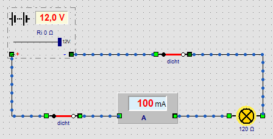

Lernpfad › Von der Energie aus › Lektion 2 von 5
Drehen Sie im Springbrunnen von Lektion 1 einen Hahn zu, dann stoppt das Wasser überall: nicht nur hinter dem Hahn, sondern im ganzen Rohr. Das Wasser kann nicht mehr im Kreis laufen. Es spielt keine Rolle, ob der Hahn im Rohr zum Wasserrad sitzt oder im Rohr zurück zur Pumpe.
Ein Schalter macht dasselbe mit Strom. Achten Sie auf die Wörter:
Ein Hahn ist genau umgekehrt: Ein offener Hahn lässt Wasser durch. Deshalb sagen wir bei einem Schalter lieber geschlossen und offen wie bei einer Zugbrücke: Über eine geschlossene Brücke kommt man hinüber.

Erklären Sie mit eigenen Worten, warum die Lampe aus bleibt, wenn nur der untere Schalter geschlossen ist. An der Lampe liegt doch Spannung? Überlegen Sie dann: Hier soll die Lampe leuchten, wenn Schalter 1 und Schalter 2 geschlossen sind. Woher kennen Sie das?
Der Strom kann nicht zur Quelle zurück: Der Kreis ist offen. Ohne Rückweg fließt nirgends etwas, auch nicht in dem Stück Draht, das an der Quelle hängt, so wie Wasser nicht im Kreis läuft, wenn im Rückrohr ein Hahn zu ist.
Zwei Schalter hintereinander (in Reihe) wirken wie ein UND: Nur wenn der eine und der andere geschlossen ist, leuchtet die Lampe. Genau das macht ein UND-Gatter. Ein Gatter ist also eine Schaltung, die Strom durchlässt oder sperrt.